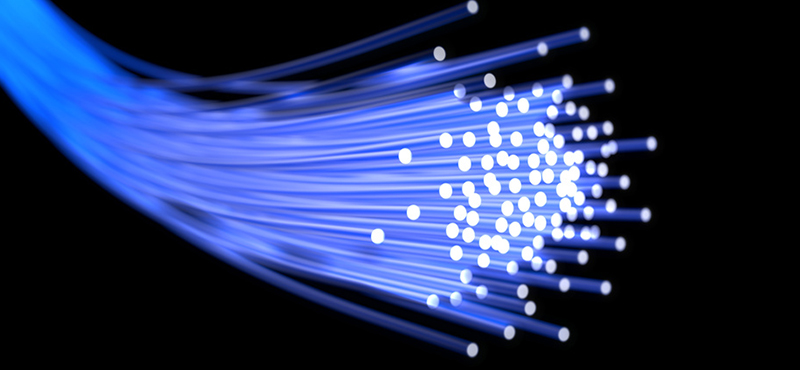

| Description | Intéret | Logo | Lien | |
| DOMAINE 1 | L'imprimante 3D permet de produire des objets en trois dimensions à partir d'un modèle défini préalablement dans un document informatique | Ce domaine m'intéresse car le fait de pouvoir crée quasiment n'importe quoi avec un imprimante m'intéresse beaucoup | Lien site d'imprimantes 3D | |
| DOMAINE 2 | L'intelligence artificielle est une technique qui permet aussi bien à un robot qu'à une voiture, un moteur de recherche ou même à un téléphone d'exécuter des tâches habituellement réalisées par les humains | Ce domaine m'intéresse car de nos jours il existe déja des produits utilisant l'ia comme google home qui permet de faire des petites choses mais pensant a ce qui sera possible de faire avec l'ia dans le futur m'intéresse | Lien site sur l'intelligence artificielle | |
| DOMAINE 3 | La fibre optique est la technologie la plus récente en matière d'accès à Internet. En pratique, elle permet le transfert des données à grande vitesse via la lumière. Cette dernière transite par un câble contenant des fils de verre ou de plastique aussi fins que des cheveux | Ce domaine m'intéresse car la fibre permet l'accés a internet trés haut debit |  | Lien site sur la fibre optique |